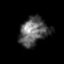

最小
最大
平均値
標準偏差
標準誤差
0
73.1421
6.29881
13.7886
0.215447
| オプション | 必須項目/選択項目 | NULL | デフォルト |
|---|---|---|---|
| -i | 必須 | 入力ファイル設定 | NULL |
| -o | 必須 | 出力ファイル設定 | NULL |
| -N | 選択 | 出力ファイルのｘ軸の画像の幅を設定（２とすると画像２枚分の幅となる） | 1 |
| -w | 選択 | 画像のつなぎ幅を設定 | 0 |
| -v | 選択 | 画像のつなぎ幅の色を設定 | 0 |
| -h | 選択 | ヘルプを表示 |
| モード | 説明 |
|---|---|
| 0 | 入力ファイルがリストの場合に設定 |
| 1 | 入力ファイルが３Ｄの場合に設定 |
|
最小 |
0 |
 |
最小 |
0 |
 |
最小 |
0 |
|  | 最小 |
0 |
最小 |
0 |
 |
最小 |
0 |
最小 |
0 |
最小 |
0 |